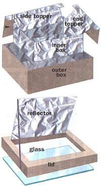
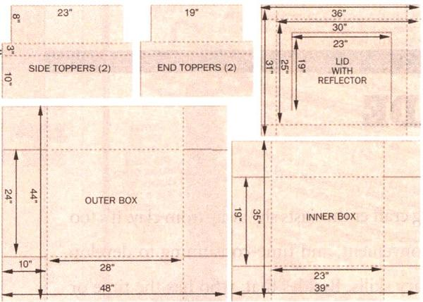

Solar Cooking For Free
An effective low-cost oven you can make in an afternoon.
By Chris Nyerges
June/July 1994
By now, we've all heard about solar cookers of one sort or another. And you know an idea has finally gone "mainstream" when you open a glossy mail-order catalog and find solar cookers for sale. Nevertheless, most residents of the United States still think of solar cookers as some sort of novelty, perhaps a good weekend project for Scouts, but not something that is practical and useful.
In fact, solar cookers are practical in every state of the Union (except Alaska) for at least six to eight months every year. Even with snow on the ground, you'll still be able to cook if the day is sunny. As for cost - well, I wouldn't consider purchasing a prefab solar cooker. My wallet simply wouldn't allow me that luxury.
Mother readers may have made their own cookers described in past issues, particularly the parabolic dish cooker, and the "breadbox" design made from wood or sheet metal. But an even simpler solar cooker can be made with cardboard boxes.
First, get two cardboard boxes. One should be able to fit into the other, with ideally an inch of space all around. (If you can't find boxes, you can cut your own boxes, using the illustrations we've provided here.) Now, cover both inside and outside of the little box with aluminum foil, and cover the inside of the big box with aluminum foil. A water-based glue works fine for this.
Now, placing the little box into the bigger box, the tops of each box should be at the same level. To accomplish this you need to support the inner box so that it is off the floor of the bigger box. This is done by placing small pieces of flat wood inside the big box. Generally, four small pieces of wood will serve as four "legs" to support the inner box. You can also use several pieces of cardboard to raise up the inner box. Once you've placed and glued these four legs, you pack all the space between the two boxes with crumpled newspapers. Though most people have no problem obtaining old newspapers for the insulation, you can use many other substances: old cotton rags, straw, dried grass, coconut fibers, etc. Though you might be tempted to use white blown foam packing chips for insulation, DON'T! At high temperatures, they often melt and/or give off undesirable fumes.
Now that you have one box inside another, with both of their tops level, and with the insulation packed between the boxes, you are ready to seal the insulation. This is done simply by taping or gluing pieces of cardboard over the top open section between the two boxes.
Next, make a lid for your cooker. If you were lucky enough to find a large cardboard box with a tight-fitting lid, you can now proceed with that lid. However, you may need to cut a lid from cardboard (see illustration in image gallery).
Once you have made your secure-fitting lid, you are ready to cut an opening for a sheet of glass or heavy-duty plastic.
You now want to cut an opening in the lid that is just as big as the opening of the inner box. But only cut the lid on three sides so you can bend up the opening and create a reflector out of it. See our illustration if this is unclear.
The opening of the lid will need to be covered with a single pane of glass or with a sheet of plastic. The plastic will be easiest to install, though glass will retain the heat better. The glass or plastic must be secured to the inside of the lid by glue or silicone caulking. Make certain that the glass is secure before proceeding.
Now, note that the flap that you cut on the lid for the glass can open and close. Line the inside of this lid flap with aluminum foil, and you have an automatic reflector. When the solar cooker is in use, you prop up the lid with a stick. Presto! Your solar cooker is complete!
The dimensions we have provided here are only recommendations and the design can be modified depending upon the supplies you have on hand. You may have a good pane of glass, and so you should adjust the cooker's size based upon the glass. There's room for flexibility.
Before you cook, you should place a black metal cookie tray, or an aluminum foil tray, on the inside of the cooker. To absorb the heat effectively, all cooking pots should be black and should be covered.
Though anyone handy with making things should have no difficulty with our explanation and illustration here, some of you may want more details. An organization called Solar Box Cookers International has been actively promoting solar cookers worldwide. They sell detailed plans for making this style of solar cooker, as well as slight variations on this design. You can write to them at 1724 Eleventh St., Sacramento, CA 95814; (916) 444-6616.
Eight Cooking Speed Factors
- Sun's angle (determined by season and time of day).
- Cloud cover.
- Wind. A strong wind will slow the cooking process somewhat.
- Cooker's orientation to sun. For meals that need to be cooked several hours, adjust cooker's position to maximize sunlight at approximately 1 1/2-hour intervals.
- Cooker size. Boxes should be as small and shallow as required to avoid substantial heat loss and shadows on food.
- Size and color of pots. Again, use the smallest pot possible and, ideally, exterior should be black to facilitate the absorption of heat. Thinner pots will allow for faster cooking.
- Food-piece size and quantity. Cut up portions as small as possible. Smaller quantities of food will cook faster.
- Water content. Use as little water as possible. Boiling in a large pot of water takes much cooking time.
- Air temperature is not as important as sun exposure, but should be above freezing.
Cooking Time On A Sunny Day
Christopher Nyerges is the author of Urban Wilderness and Guide to Wild Food.
 COURTESY SOLAR COOKERS INT. An effective low-cost oven you can make in an afternoon. |
 ROB SCHUSTER To make clean, straight folds, press first with a blunt edge such as a spoon handle, then fold against a firm straight edge. |
 |